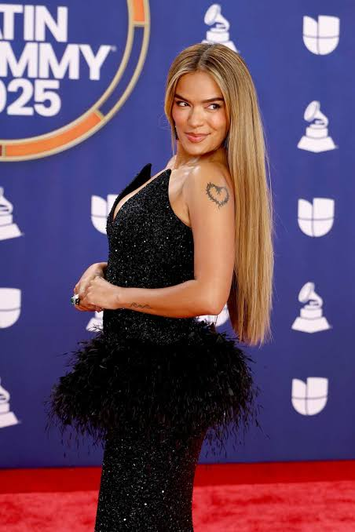

Carolina Giraldo Navarro, conocida artísticamente como Karol G, tiene actualmente 35 años (nació el 14 de febrero de 1991). Creció en Medellín, Colombia, rodeada de una familia muy unida y con un entorno musical muy fuerte gracias a su padre, quien era músico. Desde los 5 años comenzó a tomar clases de canto y a participar activamente en eventos familiares interpretando baladas, antes de inclinar su carrera de manera decidida hacia los ritmos urbanos.
Antes de alcanzar el éxito masivo y convertirse en "La Bichota", Carolina tuvo que trabajar duro para hacerse un espacio en la industria. A los 15 años participó en el reality musical "El Factor Xs", lo que le dio su primer contrato y exposición. Sin embargo, el camino no fue fácil: trabajó durante años como corista del cantante Reykon y, tras ser rechazada por varias discográficas importantes, decidió mudarse a Estados Unidos para estudiar administración de empresas musicales con el fin de entender mejor el negocio y autogestionar su carrera.
Hoy en día, Karol G acumula cientos de galardones internacionales y ha roto récords históricos en la música latina. Entre sus premios más destacados en las grandes galas se encuentran sus Premios Grammy anglosajones por "Mañana será bonito", trabajo con el que hizo historia al ser el primer álbum de una mujer latina en debutar en el número 1 del Billboard 200. También suma numerosos Premios Latin Grammy, incluyendo galardones de máxima categoría como Álbum del Año y Canción del Año por éxitos globales como "Si antes te hubiera conocido". Su impacto cultural la ha consolidado como una de las artistas más influyentes del pop urbano a nivel mundial, logrando además históricas giras de estadios completamente agotadas.
Fuerza Regida

Jesús Ortiz Paz, conocido artísticamente como JOP, tiene actualmente 29 años (nació el 13 de mayo de 1997). Aunque nació en Sinaloa, México, creció y se crio en las ciudades de Riverside y San Bernardino, California. Creció en un entorno con fuertes raíces mexicanas, ya que su madre es originaria de Michoacán y su padre de Colima, lo que hizo que desde muy niño escuchara y desarrollara una gran pasión por la música regional mexicana.
Antes de alcanzar el éxito masivo y revolucionar los corridos tumbados, Jesús llevaba la vida de un joven estudiante común en California. Alrededor de los 17 años comenzó a cantar de manera más formal, fuertemente inspirado por figuras como Ariel Camacho. Durante su adolescencia, la música no era su único camino, ya que llegó a considerar seriamente dedicarse al boxeo profesional e incluso a la actuación. Finalmente, en 2015, se juntó con amigos de la escuela para fundar Fuerza Regida, comenzando desde abajo tocando covers en fiestas locales y reuniones comunitarias.
Hoy en día, JOP es uno de los cantautores y productores más influyentes de la música latina, desempeñándose además como director ejecutivo de su propio sello, Street Mob Records. A lo largo de su carrera con Fuerza Regida, ha acumulado múltiples éxitos que han liderado las listas de Billboard, incluyendo álbumes históricos como "Del Barrio Hasta Aquí". En las grandes galas y ceremonias de la industria, ha sido reconocido con prestigiosos galardones como el premio al Compositor del Año en los BMI Latin Awards, múltiples certificaciones de doble platino, y nominaciones en los Billboard Music Awards y Premios Billboard de la Música Latina gracias a hits mundiales como «Radicamos en South Central», «Sigo Chambeando» y «Bebé Dame», además de su sonada colaboración internacional con Shakira en el tema «El Jefe».